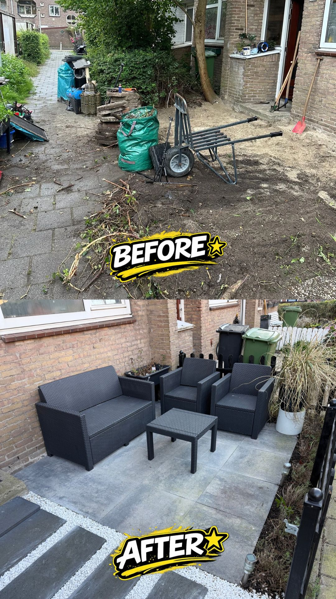
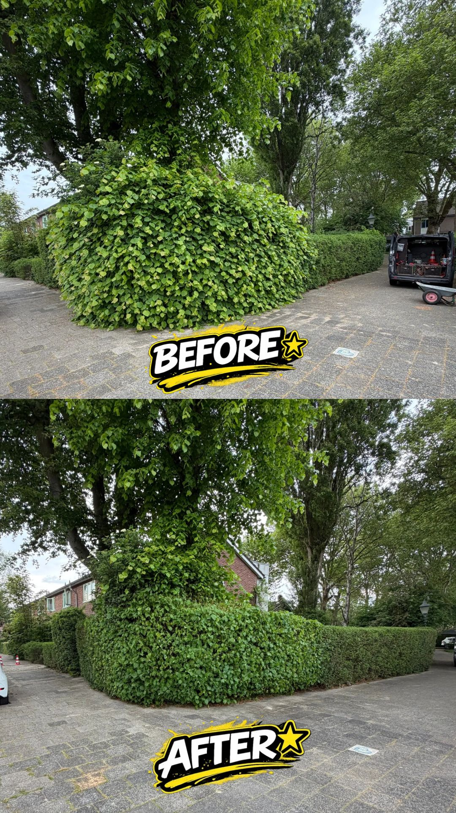

Ons Werk
Onze Projecten
Bekijk de transformaties die wij hebben gerealiseerd voor tevreden klanten.
 Tuinaanleg
TuinaanlegAchtertuin Renovatie
Complete transformatie van een verwaarloosde tuin.
 Onderhoud
OnderhoudGazon & Borders
Van dorre vlakte naar groen gazon.
 Bestrating
BestratingOprit Bestrating
Verzakte oprit hersteld met strakke klinkers.

BestratingTerras Project
Nieuw terras met sierbestrating.

OnderhoudHeggen Snoeien
Professioneel snoeiwerk.
 Bestrating
BestratingKeramische Tegels
Luxe keramische tegels gelegd.